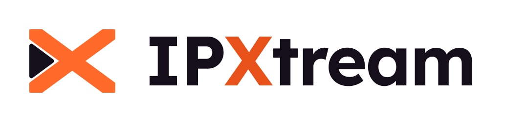
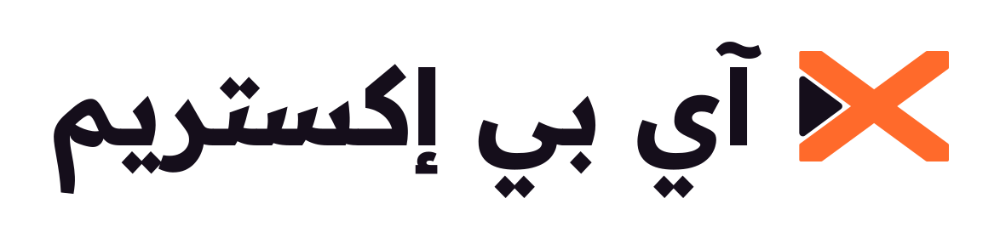
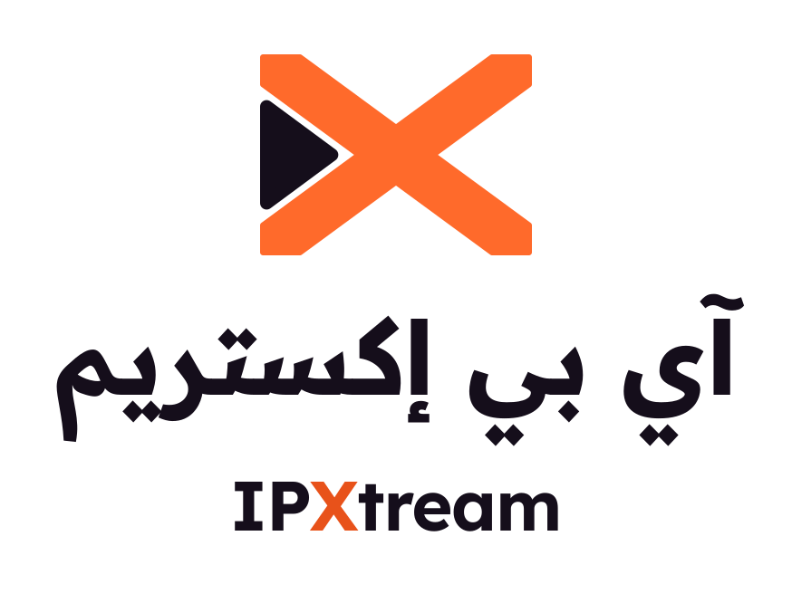
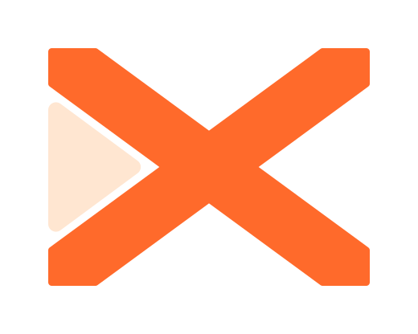
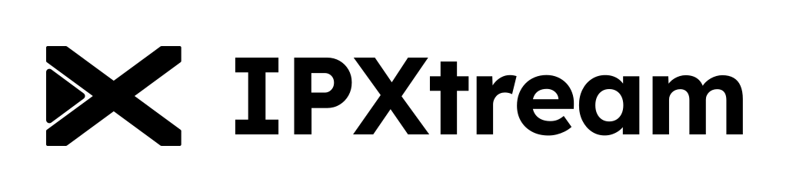
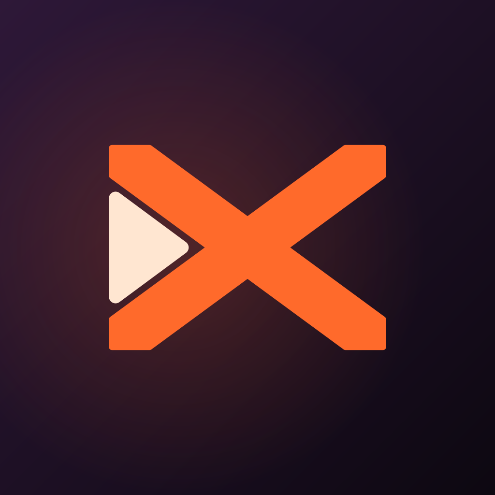

الشعار Logo
العلامة حرف X عريض بذراعين مائلتين بزاوية ٣٦٫٥°، وفي فراغه الأيسر مثلث تشغيل يشير إلى نقطة التقاطع: «X» الاسم و«▶» البث في شكل واحد. حرف X في الكلمة اللاتينية يأخذ لون الجمرة ليربط الكلمة بالعلامة.
The mark is a wide slab X (arms at ±36.5°) whose left counter holds a play triangle pointing at the crossing: the X of the name and the ▶ of streaming in one shape. The X in the wordmark is Ember to tie word and mark together.الأساسي Primary
logo-horizontal.svg
logo-horizontal-light.svglogo-stacked.svglogo-stacked-light.svgالعربي وثنائي اللغة Arabic and bilingual

logo-arabic-horizontal.svg
logo-arabic-horizontal-light.svglogo-bilingual-stacked.svg
logo-bilingual-stacked-light.svgالعلامة والكلمة وأحادي اللون Mark, wordmark, mono

mark.svg
wordmark.svg
*-mono-white.svg
*-mono-black.svgأيقونة التطبيق App icon
خلفية «ليل» بتدرّج بنفسجي مع توهّج جمرة خفيف خلف العلامة. الأيقونة التكيّفية ١٠٨×١٠٨dp والعلامة داخل دائرة الأمان ٦٦dp، فتبقى كاملة مع أي قناع. شعار التلفاز (Banner) بمقاس ٣٢٠×١٨٠ يحمل الاسم كاملًا كما تطلب Google.
Night plum gradient with a soft Ember glow. Adaptive icon is 108×108 dp with the mark inside the 66 dp safe circle, so no launcher mask clips it. The 320×180 TV banner carries the full name, as Android TV requires.
icon/icon-master.svgicon/tv-banner/banner.svgicon/adaptive/preview-masks.svgالألوان Colour palette
لوحة دافئة لا تشبه الأسود والرمادي المحايد السابق: جمرة برتقالية للأفعال، أوركيد للثانوي، هالة كريمية للتركيز بدل الأبيض، وليل بنفسجي عميق بدل الأسود.
A warm palette, unlike the previous neutral black/grey: Ember for actions, Orchid for secondary, Halo cream for focus instead of white, and deep plum Night instead of black.الألوان الرئيسية Core colours
ألوان الحالة Semantic
التدرّجات Ramps
جمرة Ember
FFF1EA
FFDCCB
FFBB9B
FF9A6B
FF8048
FF6A2B
E8521A
B83D12
86300F
4D1C0B
أوركيد Orchid
F6F0FF
EADCFF
D6BCFF
C39BFF
B488FF
A574FF
8A55F0
6E3BD0
4F2A99
2C1A52
ليل Night — neutrals
F8F4F6
EEE8EF
D9D0DC
B8ACBE
8F8296
6A5C74
4B3D56
362A40
271C2F
1D1424
150E1B
0D0811
هالة وورق Halo & Paper
FFF4EA
FFE6D1
FFD2AE
FFFFFF
FBF7F4
F4EDE9
EAE1DD
DCD0CD
التباين والمشاهدة من بُعد Contrast at TV distance
| الزوج · Pair | داكن · Dark | فاتح · Light | ملاحظة |
|---|---|---|---|
| نص أساسي / الخلفية | 18.2:1 AAA | 17.8:1 AAA | العناوين والنص |
| نص ثانوي / الخلفية | 9.1:1 AAA | 9.4:1 AAA | البيانات الوصفية — مناسب لأحجام ١٤sp |
| نص خافت / الخلفية | 5.5:1 AA | 5.8:1 AA | للتلميحات فقط، ١٨sp فأكثر |
| نص على الجمرة | 6.9:1 AA | 5.3:1 AA | دائمًا نص داكن على الجمرة؛ الأبيض ٢٫٩:١ ويفشل |
| نص على منصّة التركيز | 16.5:1 AAA | 17.5:1 AAA | الهالة في الداكن، الليل في الفاتح |
| نص بلون الجمرة | 8.0:1 AAA | 5.3:1 AA | ember.400 داكن · ember.700 فاتح |
| زر الجمرة / الخلفية | 6.9:1 | 3.5:1 | حدود العنصر ≥ ٣:١ (غير نصّي) |
| نجاح · تحذير · خطأ | 10.6 · 12.3 · 6.4 | 5.0 · 5.4 · 5.6 | لا تعتمد على اللون وحده: أيقونة + كلمة |
- الخلفية
#0D0811وليست أسود خالصًا: الأسود بجانب صور ساطعة يسبّب هالات على شاشات LCD ذات الإعتام المحلي. - النص
#F8F4F6وليس أبيض خالصًا لتقليل الوهج من بعد ثلاثة أمتار؛ أسطع عنصر على الشاشة هو منصّة التركيز، فتجدها العين أولًا. - الجمرة لون مشبع، وأوضاع «Vivid» في التلفزيونات تزيده تشبّعًا؛ استخدمه للأزرار والتقدّم واللمسات، لا لتعبئة الشاشة كاملة ولا للنصوص الطويلة.
- الجمرة والورد كلاهما دافئ؛ الخطأ والبث المباشر يرافقهما دائمًا نص («مباشر» / LIVE) أو أيقونة.
- التركيز لا يعتمد على اللون وحده: منصّة أو إطار بالهالة مع تكبير ١٫٠٦–١٫١.
palette/palette.md.
الثيمات Themes
الثيم الداكن هو الأساسي على التلفاز. الفاتح للمعاينات والاستخدام النهاري ورفيق الهاتف. التركيز في الداكن منصّة «هالة» بنص داكن، وفي الفاتح منصّة «ليل» بنص كريمي.
Dark is the primary theme on TV; light is for previews, daytime and a phone companion. Focus is a Halo platter on dark and a Night platter on light.الداكن · Dark (TV default)
الفاتح · Light
الأدوار الدلالية Semantic roles
| الدور · Role | داكن | فاتح | الاستخدام |
|---|---|---|---|
background | #0D0811 | #FBF7F4 | خلفية الشاشة |
surface | #150E1B | #FFFFFF | اللوحات والقائمة الجانبية |
card | #1D1424 | #F4EDE9 | البطاقات والملصقات |
surfaceRaised | #271C2F | #EAE1DD | الحوارات |
textPrimary | #F8F4F6 | #150E1B | العناوين والنص |
textSecondary | #B8ACBE | #4B3D56 | البيانات الوصفية |
primary / onPrimary | #FF6A2B / #0D0811 | #E8521A / #0D0811 | الأزرار الأساسية |
secondary | #B488FF | #6E3BD0 | الأفعال الثانوية والشرائح المختارة |
focus / onFocus | #FFE6D1 / #0D0811 | #150E1B / #FFF4EA | منصّة التركيز |
progress | #FF6A2B | #E8521A | شريط المشاهدة |
live / error | #FF5470 | #C21E3D | البث المباشر والأخطاء |
themes/Color.kt (Compose: IpxPalette, IpxDarkColors, IpxLightColors, LocalIpxColors), themes/colors.xml, themes/tokens.json (W3C design tokens).
الخطوط Typography
زوج مصمَّم ليعمل معًا: Readex Pro للعربية وهو امتداد عربي لـ Lexend اللاتيني؛ كلاهما صُمّم لسهولة القراءة، بنفس السماكات والارتفاعات، ومرخّصان برخصة SIL Open Font License المجانية.
A matched pair: Readex Pro (Arabic) was designed as the Arabic companion to Lexend (Latin). Both are built for readability, share weights and proportions, and are free under the SIL Open Font License.سلّم الأحجام للتلفاز TV type scale (at 960×540 dp)
| المستوى | الحجم / السماكة | مثال |
|---|---|---|
| Display | 48sp · 600 | عنوان البطل |
| Headline | 32sp · 600 | عنوان القسم |
| Title | 24sp · 500 | عنوان البطاقة |
| Body | 18sp · 400 | وصف الفيلم والنص العام |
| Label | 16sp · 500 | الأزرار والشرائح |
| Caption | 14sp · 400 | أصغر حجم مسموح على التلفاز |
العربية تحتاج ارتفاع سطر أكبر (١٫٤–١٫٥) من اللاتينية (١٫٢–١٫٣) لاستيعاب النقاط والحركات. لا تستخدم تباعد الأحرف السالب مع العربية لأنه يكسر الوصل.
Arabic needs more line height (1.4–1.5) than Latin (1.2–1.3) for dots and marks. Never apply negative letter-spacing to Arabic: it breaks the joins.المساحة الآمنة والحد الأدنى للحجم Clear space and minimum size
المساحة الآمنة حول الشعار = نصف ارتفاع العلامة (x) من كل جانب. لا يدخلها نص أو صورة أو حافة شاشة.
Clear space on every side = half the mark's height (x). No text, image or screen edge inside it.| العنصر | أصغر حجم على الشاشة | أصغر حجم مطبوع |
|---|---|---|
| العلامة وحدها | 24dp عرضًا | 8mm |
| الشعار الأفقي | 120dp عرضًا | 30mm |
| الشعار العمودي / ثنائي اللغة | 96dp عرضًا | 24mm |
المسافات Spacing scale
شبكة ٨dp: 4 · 8 · 16 · 24 · 32 · 48. هامش الصفحة ٤٨dp أفقيًا و٢٧dp رأسيًا (منطقة الأمان من القصّ على التلفاز). نصف قطر الزوايا: ٨ للشرائح، ١٤ للبطاقات، ٢٠ للحوارات.
افعل ولا تفعل Do and don't
-light.- لا تعيد كتابة الكلمة بخط آخر؛ استخدم الملفات الجاهزة (النص فيها محوّل إلى مسارات).
- لا تلوّن جزءًا من الكلمة العربية بلون مختلف؛ الكلمة العربية بلون واحد دائمًا.
- الاسم يُكتب «IPXtream» بحرفين كبيرين ثم X كبير؛ لا «Ipxtream» ولا «IPXTREAM».
الملفات Files
logo/svg/ · logo/png/ | العلامة، الكلمة، الأفقي، العمودي، العربي، ثنائي اللغة — بنسخ داكن/فاتح/أبيض/أسود (PNG بمقاسين) |
icon/icon-master.svg | الأيقونة الرئيسية + icon-master-1024.png وplay-store-512.png |
icon/adaptive/ | طبقات الأيقونة التكيّفية (أمامية، خلفية، أحادية لـ Android 13) SVG وPNG، ومعاينة الأقنعة |
icon/android-res/ | جاهزة للنسخ إلى app/src/main/res/: mipmap-*/ic_launcher*.png، mipmap-anydpi-v26/، drawable/ (Vector)، drawable-xhdpi/banner.png |
icon/tv-banner/ | شعار التلفاز SVG و٦٤٠×٣٦٠ و١٢٨٠×٧٢٠ |
palette/palette.md | كل الألوان والأدوار ونسب التباين |
themes/ | Color.kt · colors.xml · tokens.json |
_source/build-brand.js | المولّد: يعيد بناء كل ما سبق من تعريف واحد للألوان والهندسة |